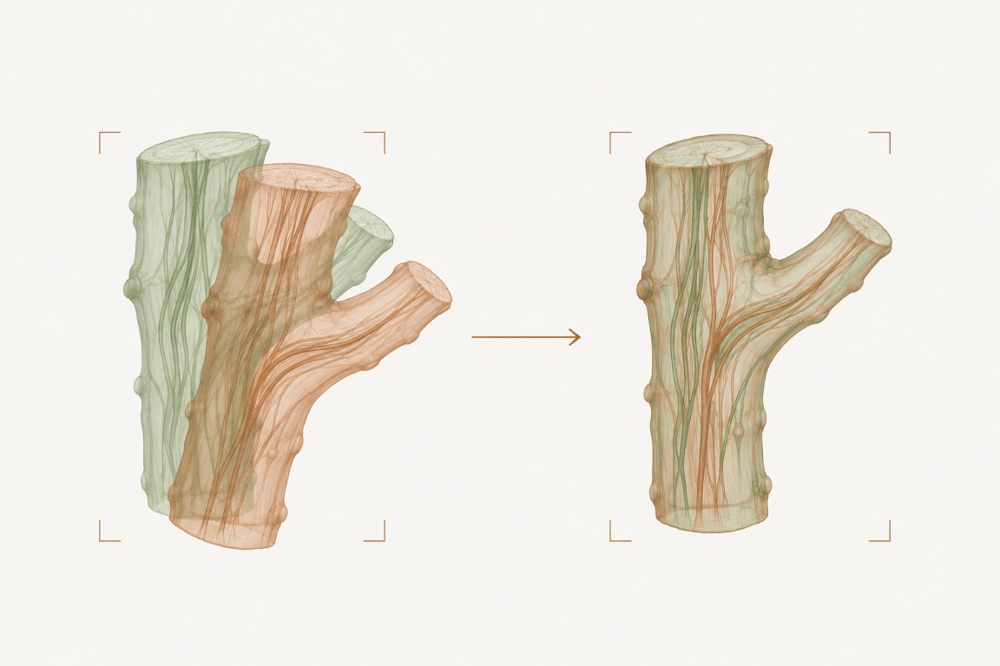
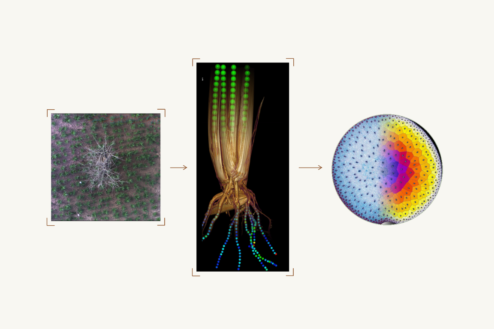
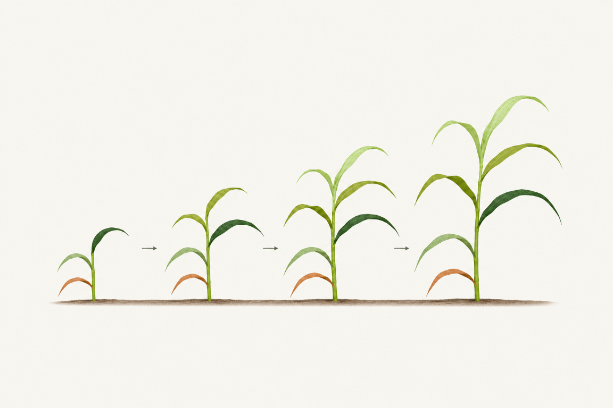
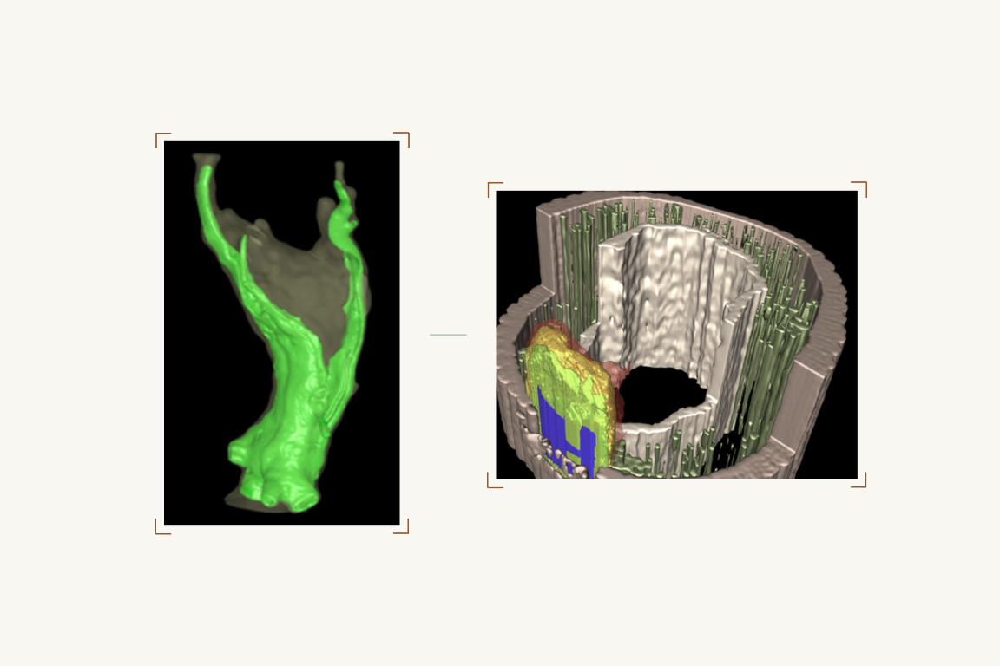
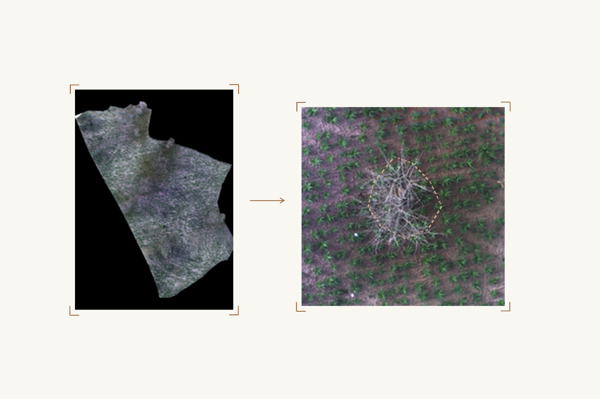
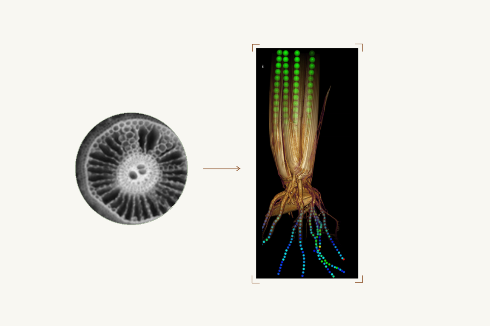

Software / 3D imaging
Fijiyama
My role · Creator


Register and align multimodal 3D images and time series in a shared reference geometry. A Fiji tool connecting observations from different imaging modalities.
Researcher · CIRAD · AGAP Institut
I develop image analysis and modelling approaches for cultivated plants — connecting observations from drone imagery to cellular structures.
CIRAD · UMR AGAP Institut · PHENOMEN team

Research perspective
Turning images into measurements, and measurements into a better understanding of plants.
My current focus is image analysis and modelling of cultivated plants. My work spans aerial observations, whole-plant geometry and internal structures, bringing computational methods into contact with biological and agronomic questions.
Selected work
A selection of collaborative work.
My role is indicated for each project.
My role · Creator

Register and align multimodal 3D images and time series in a shared reference geometry. A Fiji tool connecting observations from different imaging modalities.
My role · Co-creator

Track maize organs over time from a series of 3D plant reconstructions, connecting organ identity with plant development.
My role · Co-lead & research supervisor

Imaging approaches for studying grapevine trunk diseases, using non-destructive observations to investigate internal wood structures.
My role · PhD supervisor

Research at the intersection of aerial image analysis and agroforestry, connecting field-scale observations with questions about crops and trees.
My role · Co-lead & visualisation / analysis designer

A rice digital twin for methane reduction. I co-lead the project and design visualisation and analysis tools to support this research goal.
Start a conversation
For a research enquiry, describe your scientific question, the imaging data available, and the contribution you have in mind. This helps identify where our interests meet.